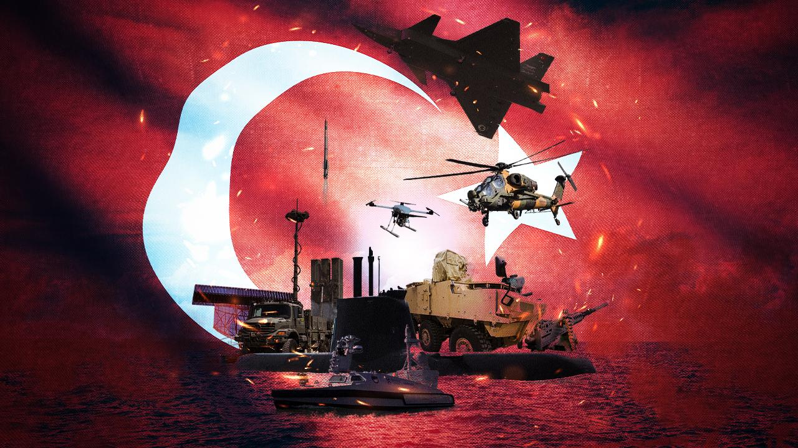

Türkiye'nin Savunma Sanayisindeki Yükselişi
Uçaklar, helikopterler ve hava savunma sistemleri
Tanklar, zırhlı araçlar ve kara savunma teknolojileri
İnsansız hava araçları ve keşif sistemleri
Türkiye, son 20 yılda savunma sanayii alanında büyük bir atılım gerçekleştirmiştir. Ar-Ge faaliyetlerine verilen önem, yerli üretici firmalara sağlanan destekler ve stratejik planlamalar sayesinde, savunma sistemlerinde yerlilik oranı %70’in üzerine çıkmıştır. Bu gelişmeler, Türkiye’yi sadece kendi ihtiyaçlarını karşılayan bir ülke konumuna getirmekle kalmamış, aynı zamanda dünya genelinde rekabetçi bir savunma ihracatçısı haline getirmiştir.
Geliştirilen milli projeler arasında insansız hava araçları (İHA ve SİHA'lar), zırhlı kara araçları, radar sistemleri ve füze teknolojileri yer almakta, bu sistemler birçok ülke tarafından ilgiyle takip edilmektedir. Türkiye'nin bu alandaki başarısı, hem ekonomik hem de stratejik anlamda önemli bir kazanım olarak değerlendirilmektedir.